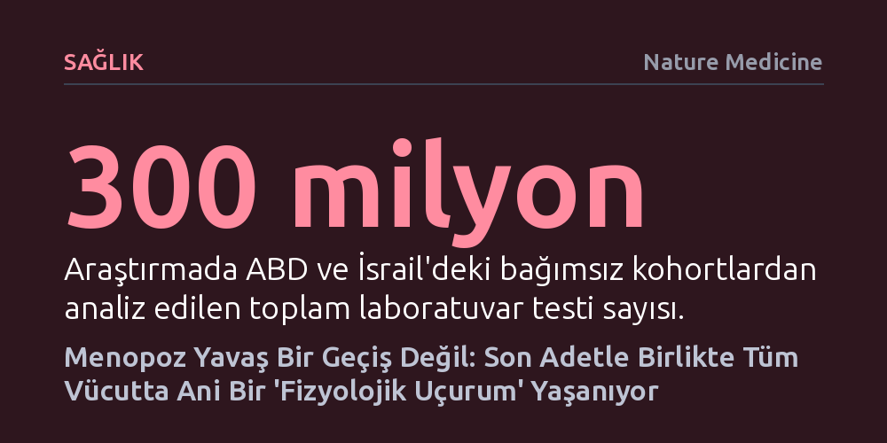

SAGLIK · Nature Medicine · 2026-10-13
300 milyon kan tahlilini inceleyen kapsamlı araştırma, menopozun kademeli bir geçiş değil, son adet anında neredeyse tüm organları vuran ani bir 'fizyolojik uçurum' olduğunu kanıtladı. Hormonal dengesizliğin 15 yıl önceden başladığı bu kırılma, hormon tedavisiyle belirgin biçimde hafifletilebiliyor.
Menopozun yaşlanmanın doğal ve yavaş bir uzantısı olduğu algısını yıkarak, son adet anında gerçekleşen sistemik şoku ve bu kırılmanın en az on yıl öncesinden başlayan önlenebilir hormonal sinyallerini görünür kılıyor.

Tıp dünyasında menopoz uzun zamandır kadının orta yaşlarda deneyimlediği, yıllara yayılan, yavaş ve kademeli bir hormon azalması süreci olarak kabul ediliyordu. Ancak Nature Medicine'da yayımlanan ve 1 milyondan fazla kadına ait 300 milyon laboratuvar sonucunu inceleyen devasa araştırma, bu yerleşik kabulü tamamen altüst ediyor. Veriler, menopozun zamana yayılmış yumuşak bir iniş değil; kadının gördüğü son adetle (FMP) birlikte neredeyse tüm organ sistemlerinde aynı anda meydana gelen dik ve basamaklı bir "fizyolojik uçurum" olduğunu gösteriyor.
Araştırmacıların incelediği 90 farklı laboratuvar testinin 52'sinde, son adet anına denk gelen belirgin ve ani sıçramalar tespit edildi. Bu ani kırılma sadece östrojen veya folikül uyarıcı hormon (FSH) gibi beklenen üreme hormonlarıyla sınırlı kalmıyor; karaciğer enzimlerinden kemik metabolizmasına, kan yağlarından böbrek fonksiyonlarına ve vücut sıvı dengesine kadar hemen her sistemi derinden sarsıyor. Aynı yaştaki erkeklerin tahlil sonuçlarında ise 50 yaş civarında hiçbir basamaklı sıçrama görülmüyor; erkek bedeni yaşlanma eğrisini kademeli bir şekilde sürdürürken, kadın bedeni son adet anında ani bir sistemik başkalaşım geçiriyor.
İlginç bir şekilde, bu fizyolojik uçurumda ibrenin olumlu yöne döndüğü yegane parametre grubu kan sayımı ve demir metabolizması oldu. Her ay yaşanan düzenli kanamanın durmasıyla birlikte ferritin ve hemoglobin değerleri yükseliyor, böylece menopozla birlikte kadınlarda anemi (kansızlık) sıklığı belirgin biçimde geriliyor. Ancak bunun dışındaki neredeyse tüm sistemik değişimler, hastalık riskini artıran yönde ani birer basamak oluşturuyor.
Bugüne kadar böylesine sert bir kırılmanın fark edilememiş olmasının temelinde, sağlık kayıtlarının tutuluş biçimindeki büyük bir kör nokta yatıyordu. Geleneksel sağlık veri tabanlarında kadınların kesin son adet tarihi nadiren kaydedilir; tahliller sadece takvim yaşı üzerinden dizilir. Ancak her kadının menopoza girdiği yaş farklı olduğundan, veriler yaşa göre topluca ortalandığında ani kırılmalar birbirinin üzerine binerek siliniyor ve sanki süreç 40'lı ve 50'li yaşlara yavaşça yayılmış gibi sahte bir yanılsama oluşuyordu.
Araştırma ekibi bu engeli aşmak için astronomide bulanık uzay görüntülerini netleştirmek amacıyla kullanılan bir matematiksel yöntemden (ters evrişim / dekonvolüsyon) esinlendi. Nasıl ki bir teleskobun lensinden kaynaklanan dağılma etkisi geriye doğru hesaplanarak yıldızın gerçek keskin görüntüsü elde edilebiliyorsa, toplumdaki menopoza girme yaş dağılımı da modellenerek her bir kan testinin son adet anına göre gerçek konumu matematiksel olarak yeniden hizalandı. YoGlen adı verilen bu algoritma, ABD ve İsrail'deki iki devasa bağımsız veri tabanına uygulandığında, kronolojik yaşın örttüğü o sert biyolojik kırılma tüm çıplaklığıyla gün yüzüne çıktı.
Bu yöntemin ortaya çıkardığı bir diğer çarpıcı gerçek ise hormonal dengesizliğin zamanlaması oldu. Bugüne kadar menopoza geçişin son adetten 3 ila 7 yıl önce başladığı düşünülürken, modelleme yumurtalık rezervini gösteren AMH hormonunun son adetten tam 15 yıl önce hızlı bir düşüşe geçtiğini gösterdi. Benzer şekilde FSH hormonu yaklaşık 14 yıl önce yükselmeye, östrojen ise 12 yıl önce hızla azalmaya başlıyordu. Yani kadın bedeni, menopozun fiziksel eşiğine varmadan on yıldan uzun süre önce sessizce ve derinden dönüşmeye başlıyor.
Son adetle birlikte gelen laboratuvar sıçramaları soyut rakamlardan ibaret değil; doğrudan klinik hastalıklara davetiye çıkaran birer tetikleyici işlevi görüyor. Veriler, menopoz sonrasında osteoporoz (kemik erimesi) görülme hızının erkekleri çok geride bırakarak dik bir tırmanışa geçtiğini, kalp krizi ve inme gibi kardiyovasküler risklerin de benzer bir ivmeyle arttığını kanıtlıyor. Ruh sağlığı ölçekleri ve uyku sorunları ise son adetin hemen ardından gelen ilk yılda tepe noktasına ulaşıp geçici bir sıçrama yapıyor, ardından daha yavaş bir seyirle dengeleniyor.
Çalışmanın en umut verici bulgusu ise menopozal hormon tedavisinin (MHT) bu fizyolojik uçurum üzerindeki etkisi oldu. Hormon tedavisi kullanan kadınların kan tahlilleri incelendiğinde, menopoz anında görülen o sert basamakların neredeyse tamamen düzleştiği ve eğrinin menopoz öncesi durumun doğal bir devamı gibi pürüzsüzleştiği görüldü. Kemik, karaciğer ve böbrek göstergelerindeki anormal sapmalar tedaviyle büyük ölçüde dizginlendi; doğal sıçramanın boyutu ne kadar büyükse, hormon tedavisinin sağladığı düzeltme de o kadar güçlü oldu.
Burada gözlenen tek istisna, ağızdan alınan hormon ilaçlarının karaciğerdeki ilk geçiş etkisi nedeniyle iltihap göstergesi olan CRP değerlerini hafifçe yükseltmesi oldu. Ancak araştırmacılar, genel anlamda hormon tedavisinin doku düzeyinde anti-enflamatuar bir etki yarattığını ve organizmayı ani bir metabolik şoktan koruduğunu vurguluyor.
Elde edilen bu güçlü sonuçlara rağmen araştırmanın göz ardı edilmemesi gereken metodolojik sınırları bulunuyor. Çalışma, geleceğe dönük olarak aynı kadınları yıllarca takip eden bir kohort çalışması yerine geçmişe dönük geniş veri kümelerinden ve kişilerin kendi beyan ettiği menopoz tarihlerinden yararlanıyor. Ayrıca hormon tedavisi kullanan kadınların sosyoekonomik durumları ve sağlık hizmetine erişimleri diğer kadınlardan farklı olabileceğinden, bu düzelmenin ne kadarının doğrudan ilaca ne kadarının genel yaşam koşullarına bağlı olduğunu kesinleştirmek için yeni klinik denemelere ihtiyaç var.
Bütün bu kısıtlara rağmen çalışma, tıbbın kadın sağlığına yaklaşımında köklü bir paradigma değişimine işaret ediyor. Menopozun etkilerinin son adetten 10-15 yıl önce başladığının ve son adetle birlikte tüm vücudu sarsan ani bir uçuruma dönüştüğünün anlaşılması, koruyucu hekimliğin takvimini çok daha erkene çekiyor. Dahası, geliştirilen bu matematiksel netleştirme çerçevesi yalnızca menopozda değil; ergenlik, gebelik veya sinsi ilerleyen kronik hastalıklar gibi başlangıç anı belirsiz tüm biyolojik süreçleri aydınlatmak için evrensel bir kılavuz sunuyor.